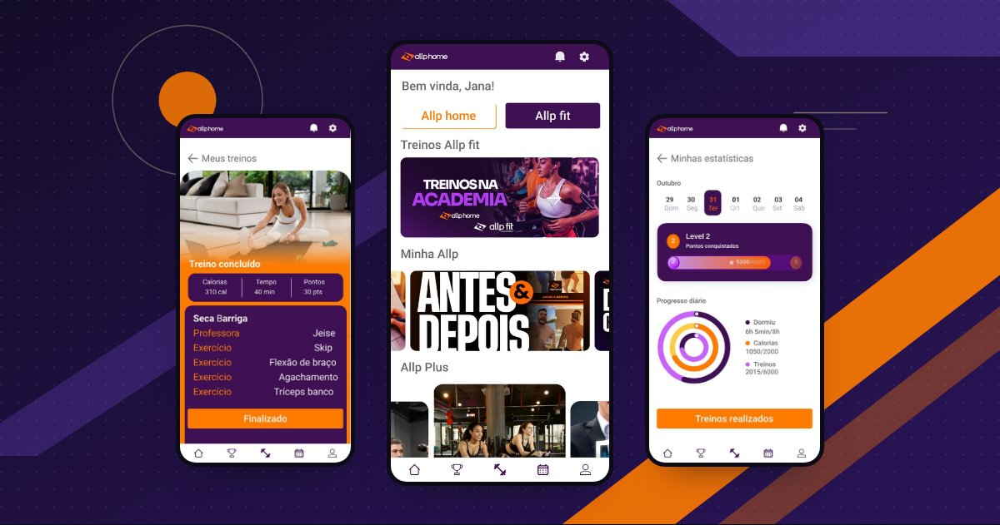

Orquidário Cantareira · identidade e loja virtual
Da estufa para o digital.
Identidade visual e loja virtual criadas do zero para um orquidário tradicional, pensadas para colecionadores que querem ver cada detalhe da planta antes de comprar.
- Status
- Em andamento
- Escopo
- Identidade visual, loja virtual e UX
- Segmento
- Botânica e paisagismo

O desafio
Uma história respeitada, ainda sem marca para o digital.
O Orquidário Cantareira tem uma história respeitada entre colecionadores de orquídeas, mas ainda não tinha uma marca nem uma loja pensadas para o digital.
Criamos tudo do zero: identidade visual, loja online e conteúdo. O desafio é levar anos de cultivo para uma experiência moderna e fácil de usar, sem perder o caráter artesanal do orquidário.
A abordagem
-
01
Identidade criada do zero
Logo, paleta e direção de arte com um tom sofisticado, pensado para o público de botânica e paisagismo.
-
02
Compra sem complicação
Uma loja em que o colecionador vê fotos detalhadas de cada orquídea, entende os cuidados e finaliza a compra em poucos passos.
-
03
Conteúdo que fideliza
Guias de cultivo e a história do orquidário para trazer o cliente de volta depois da primeira compra.
Marca e direção de arte
A serra como cenário, a orquídea como protagonista.

Próximo passo
Sua marca também merece um site à altura?
Conte sobre o seu negócio. Começamos por uma análise do seu site ou, se você ainda não tiver um, pela estratégia.
Pedir análise
Próximo projetoAllp Fit HomePesquisa e UX de um app fitness →